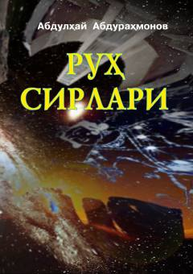

RSInson ruhiyati, borliq sirlari va parapsixologik qarashlarga bag'ishlangan ilmiy-ma'rifiy asar.
Mazkur ilmiy-ma'rifiy kitobda ruh sirlari, borliqning bunyod etilish tarixi, insonning yaratilishi va uning dunyodagi o'rni haqida fikr yuritiladi. Shuningdek, vaqt va zamonning mohiyati, ezoterik bilimlar hamda parapsixologiyaga oid masalalar mantiqiy gipotezalar asosida yoritilgan. Asar faylasuflar, ruhshunoslar va ma'naviy taraqqiyotga intiluvchi kitobxonlarga mo'ljallangan.